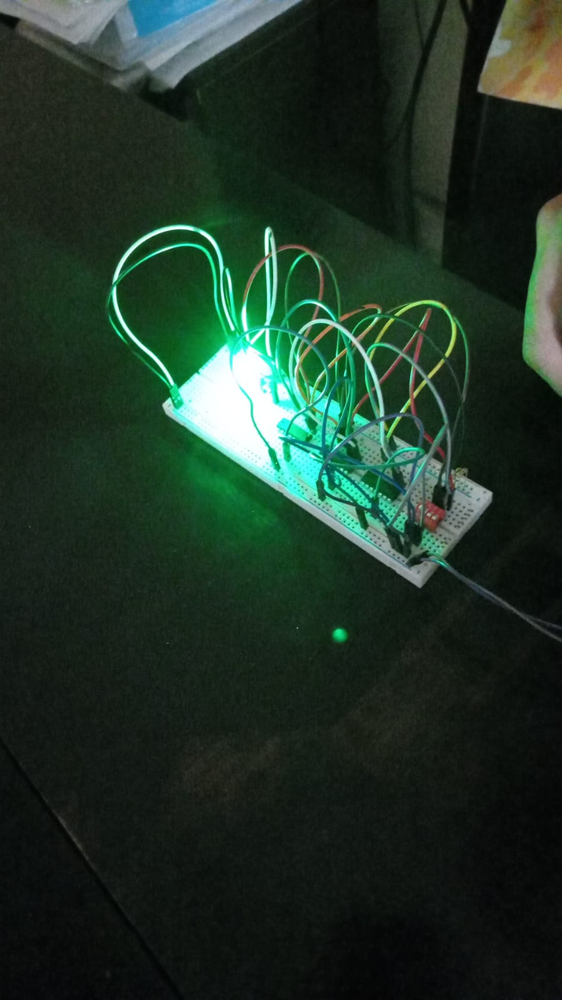
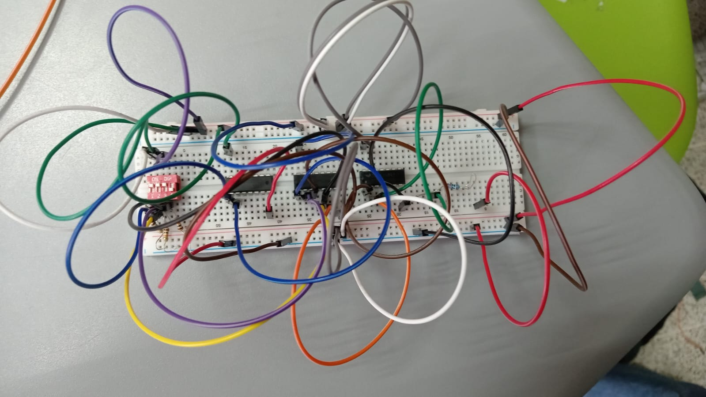

Este proyecto consiste en el análisis, diseño e implementación de un circuito digital combinacional para controlar automáticamente dos bombas de agua en un sistema de tanque residencial. El sistema utiliza sensores de nivel y temperatura para determinar cuándo deben activarse o desactivarse las bombas, garantizando un funcionamiento seguro y eficiente. A través de las condiciones establecidas en el problema, se aplican principios de Álgebra de Boole para relacionar las entradas (sensores) con las salidas (bombas B1 y B2). El diseño del circuito se realiza utilizando compuertas lógicas básicas como AND, OR y NOT, permitiendo representar el comportamiento del sistema en diferentes situaciones, como nivel bajo, nivel medio, tanque lleno o fallas en los sensores.

El objetivo de este proyecto es diseñar e implementar un circuito digital combinacional que permita controlar automáticamente el funcionamiento de dos bombas de agua en un sistema de tanque residencial, utilizando sensores de nivel y temperatura. A través de la aplicación del Álgebra de Boole y el uso de compuertas lógicas AND, OR y NOT, se busca que el sistema tome decisiones correctas según las condiciones del nivel del agua y el estado de las bombas, garantizando un funcionamiento seguro, eficiente y evitando daños por fallas o sobrecalentamiento.

En conclusión, el desarrollo de este proyecto permitió aplicar los conocimientos de lógica digital y Álgebra de Boole en un caso práctico real, relacionado con el control automático de un sistema de bombas de agua. A través del diseño de un circuito combinacional con compuertas lógicas AND, OR y NOT, se logró establecer un sistema capaz de tomar decisiones según las condiciones de los sensores de nivel y temperatura. Este tipo de implementación demuestra la importancia de la lógica digital en la automatización de procesos, ya que permite mejorar la eficiencia, seguridad y confiabilidad de sistemas reales como el control de agua en un complejo residencial.